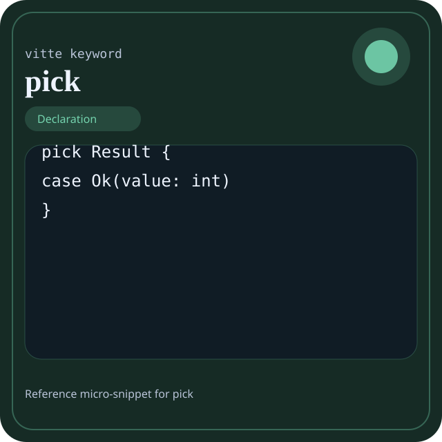

Keyword pick
pick is documented here as a full reference entry: grammatical role, semantics, canonical form, valid example, counter-example, diagnostics, interactions, and design notes.

pick.Visual anchor: each page now has its own wiki-style profile image. It shows a small code excerpt where pick appears in its most recognizable form.
Quick navigation: use the previous, summary, and next links to move through the full keyword series without manually returning to the index.
Summary
- Overview
- Definition
- Grammatical role
- Canonical syntax
- Detailed semantics
- Effect on execution
- Valid variants
- Vitte example
- Guided reading of the example
- Comparison with C
- Recommended uses
- Invalid example and diagnostic
- Common errors
- Neighbor keywords
- Common misreadings
- Implementation notes
- Presence in the book
Overview
| Field | Value |
|---|---|
| Keyword | pick |
| Family | Declaration |
| Suggested level | Intermediate |
| Main neighbor | form |
| Short role | pick is a declaration keyword that changes the shape of a module, type, or executable contract. |
| Main effect | pick acts first on the shape of the program. Its main effect appears in the entities it makes callable, instantiable, or visible during execution. |
The keyword pick defines a program shape: procedure, type, variant, entry point, namespace, or another structural boundary. It should therefore be read architecturally before it is read locally.
A useful encyclopedic reading should answer three questions: where can pick appear, what does it change in the block contract, and how does the compiler signal misuse?
Definition
pick is a declaration keyword that changes the shape of a module, type, or executable contract.
The keyword pick defines a program shape: procedure, type, variant, entry point, namespace, or another structural boundary. It should therefore be read architecturally before it is read locally.
Grammatical role
Introduces a sum type or a closed family of identified variants.
This grammatical role is essential: if a reader understands the structural place of pick, they already understand much of the diagnostics that will appear when it is moved or truncated.
Canonical syntax
Canonical form: `pick Name { case ... }`.
The canonical form matters because it gives the compiler and the reader the same reference structure. A large share of diagnostics related to pick come from an abbreviated, displaced, or incomplete form.
Detailed semantics
Semantically, pick changes the shape of the program before execution even begins. It introduces an entity that other blocks will name, call, instantiate, or reference.
In an encyclopedic reading, pick should not be reduced to a dictionary definition. Its effect on scope, block shape, value visibility, control progression, and the diagnostic family it activates when misused must also be considered.
Effect on execution
pick acts first on the shape of the program. Its main effect appears in the entities it makes callable, instantiable, or visible during execution.
In other words, the presence of pick is not merely syntactic: it helps the reader predict what will be executed, produced, exposed, or forbidden from this point in the program.
Valid variants
- `pick Name { case ... }`
These variants are not free synonyms. They indicate the legitimate forms from which one can reason about diagnostics, scope differences, or contract readability.
Vitte example
pick Result {
case Ok(value: int)
case Err(code: int)
}This example shows pick in a nominal context. It should be read globally: where the contract begins, which values are constrained, which output becomes observable, and why the presence of the keyword is justified.
Guided reading of the example
- First locate the full construction that contains
pick, not the isolated word. - Then identify which contract becomes visible because of
pick: type, branch, binding, module, exit, or advanced boundary. - Finish by checking the observable effect produced by the construction that contains
pick. - For a declaration keyword, verify which stable entity is created and how it will be referenced later.
This guided reading is intentionally closer to a reference page than to a tutorial: it helps reconstruct the exact role of pick in a complete block.
Comparison with C
enum ResultTag { OK, ERR };This C comparison is structural: it aligns the role of the keyword with a familiar surface without claiming that the two languages carry exactly the same contracts.
The source of truth remains Vitte grammar and semantics. The comparison with C should be read as a cultural marker, not as a parallel specification.
Recommended uses
pick deserves to appear when it simplifies the reading of the block's global contract, not when it merely adds one more surface form.
When to use it
- When
pickmakes the block contract more explicit at first reading. - When it reduces the number of implicit assumptions the reader must reconstruct mentally.
- When the program must introduce a stable entity that will be reused elsewhere.
When to avoid it
- Avoid
pickwhen another, more precise keyword already carries the block's intent. - Avoid
pickwhen it adds only surface noise without clarifying the contract. - Avoid reading or teaching it as an isolated token with no relation to the full structure.
Common pitfalls
- Using
pickin a grammatical layer where it does not belong. - Confusing the role of the keyword with the role of the full surrounding block.
- Showing only the nominal form and never how the contract fails.
Invalid example and diagnostic
pick Result {
Ok(value: int)
}The variant declaration is missing the expected case surface.
The counter-example is not merely wrong: it is wrong in an instructive way. It shows which grammar or execution-contract assumption is no longer accepted when pick is moved, truncated, or combined with the wrong context. Concretely, the variant declaration is incomplete or malformed.
A good encyclopedic counter-example does not show arbitrarily broken code: it isolates the precise reason why pick can no longer support the expected contract. Its teaching value is diagnostic before it is syntactic.
Common compilation errors
| Typical message | Usual cause | Fix |
|---|---|---|
unexpected token near pick | The keyword appears in an invalid form or grammatical layer. | Return to the canonical form and verify placement and delimiters. |
type mismatch | The keyword participates in a block whose value contract is incoherent. | Realign the surrounding types, branches, or produced values. |
invalid construct | The keyword is present but the surrounding construction is incomplete. | Restore the missing branch, declarative part, or operands. |
This table does not replace the compiler's exact diagnostics. It serves as a mental map: when pick fails, the problem usually comes from an invalid grammatical form, an incoherent type contract, or an incomplete construction.
Neighbor keywords
| Keyword | Operational difference |
|---|---|
form | Direct neighboring keyword: it helps explain what pick does, either by contrast or by complement. |
Comparison with neighboring keywords is essential on a wiki-style page: pick is better understood when one knows precisely what it does not do.
Common misreadings
- Reducing
pickto a local token instead of reading it as part of a full construction. - Explaining only the syntax and forgetting the reading or diagnostic contract it imposes.
Implementation and diagnostic notes
- Useful diagnostics for this family often concern incomplete signatures, constituent ordering, or declarative scope.
- In a compiler, these keywords primarily feed symbol tables and the structural representation of the program.